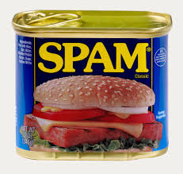

"One person's spam is another person's dinner."
-- ancient German wisdom
In this project you will be building an email spam filter.
The code for this project (project1) consists of several files, some of which you will need to read and understand in order to complete the assignment, and some of which you can ignore.
| Files you'll edit: | |
project1Main.py | The main function of this project. |
grdescent.py | Performs gradient descent. |
hinge.py | Computes the hinge loss and gradient. |
ridge.py | Computes the ridge regression loss and gradient. |
logistic.py | Computes the logistic regression loss and gradient. |
trainspamfilter.py | Trains your spam filter and saves the final weight vector in a file w_trained.mat. |
linearmodel.py | Returns the predictions for a weight vector and a data set. |
spamupdate.py | (optional) Allows you to update the spam filter when you make a mistake. |
| Files you want to look at and maybe change: | |
tokenizedata.py | A simple python script that turns raw emails into bag of word features. |
example_tests.py | Describes several unit tests to find obvious bugs in your implementation. Uses checkgradLogistic.py and checkgradHingeAndRidge.py. |
| Files you might want to look at: | |
valsplit.py | This function takes the data and splits it into 80% training (xTr,yTr) and 20% validation (xTv,yTv). The splitting is not random but by time (i.e. the training data consists of emails that were received before the validation data.) |
spamfilter.py | Loads in the file w_trained.mat and applies the corresponding spam filter on whatever test set you pass on as argument. |
| Helper files (you don't have to look at): | |
vis_rocs.py | Visualizes the ROC curves for the differnt losses using the train/test split from valsplit. |
spamdemo.py | Runs your classifier on some sample emails, and shows you the ones it misclassifies. |
How to submit: You can commit your code through the command line with git and submit on Gradescope either in a zip file or through Github. Do not include any training data in the submission. If the project is submitted before the initial deadline passes, you will receive information and a score for the perfromance evaluation (only once the deadline is reached).
However, the autograder will not reveal any information on how your code performed for any projects submitted during the three day extension period. You can submit your project as many times as you want but the final submission score will count for your grade. If you submitted by the initial deadline and would like to improve your performance score, you can submit again during the extension period.
Grading: Your code will be autograded for technical correctness. Please do not change the names of any provided functions or classes within the code, or you will wreak havoc on the autograder. However, the correctness of your implementation -- not the autograder's output -- will be the final judge of your score. If necessary, we will review and grade assignments individually to ensure that you receive due credit for your work.
PYTHON Version in Autograder: The autograder uses PYTHON 3.6. We recommend using any version of PYTHON 3.6 or newer for the implementation projects.
Regrade Requets: Use Gradescope for regrade requests.
Academic Dishonesty: We will be checking your code against other submissions in the class for logical redundancy. If you copy someone else's code and submit it with minor changes, we will know. These cheat detectors are quite hard to fool, so please don't try. We trust you all to submit your own work only; please don't let us down. If you do, we will pursue the strongest consequences available to us.
Getting Help: You are not alone! If you find yourself stuck on something, contact the course TAs for help. Office hours and Piazza are there for your support; please use the appropriate tags (project1 and/or autograder). If you can't make any of our office hours, let us know and we can schedule an alternative time. We want these projects to be rewarding and instructional, not frustrating and demoralizing. But, we don't know when or how to help unless you ask.
The data will be provided for download on Canvas. It comes in a folder data . The file data_train_default.mat contains the pre-processed email data, where emails are represented as bag-of-words vectors. You will need this file to get started with your implementation. To improve your spam filter for the quality evaluation you might want to use the raw data in the data_train subfolder. This data contains the raw email text, so that you can invent your own features.
Before you dive into the programming part of this assignment you will need to derive the gradients for several loss functions. You do not have to hand this part in, but save your derivations as these are part of written homework 1.
Derive the gradient function for each of the following loss functions with respect to the weight vectdor $w$. Write down the gradient update (with stepsize $c$).
(Note that: $\|w\|_2^2=w^\top w$ and $\lambda$ is a non-negative constant.)
You will now implement these functions and their gradient updates.
In project1Main.py
# load the data:
data = io.loadmat('data_train.mat')
X = data['X']
Y = data['Y']
# split the data:
xTr,xTv,yTr,yTv = valsplit(X,Y)
This should generate a training data set xTr, yTr and a validation set xTv, yTv for you. ridge.py which computes the loss and gradient for a particular data set xTr, yTr and a weight vector w.
Make sure you don't forget to incorporate your regularization constant $\lambda$.
You can check your gradient with the code included in checkgradHingeAndRidge.py.
Keep this method of checking the gradients in mind beyond this assignemnt whenever you have to implement functions and their gradients!grdescent.py which performs gradient descent.
Make sure to include the tolerance variable to stop early if the norm of the gradient is less than the tolerance value (you can use the function norm(x)). When the norm of the gradient is tiny it means that you have arrived at a minimum. grdescent is a function which takes a weight vector and returns loss and gradient.
In Octave you can make inline functions e.g. with the following code (first line):
f = lambda w : ridge(w,xTr,yTr,0.1)
w_trained = grdescent (f,np.zeros((xTr.shape[0],1)),1e-06,1000)
You can choose what kind of step-size you implement (e.g. constant, decreasing, line search,...).
[HINT: Personally, I increase the stepsize by a factor of 1.01 each iteration where the loss goes down, and decrease it by a factor 0.5 if the loss went up.
... if you are smart you also undo the last update in that case to make sure the loss decreases every iteration.]linearmodel which returns the predictions for a vector w and a data set xTv. >> python3 project1Main.py False positive rate: 0.65% True positive rate: 56.09% AUC: 97.58%The first command trains a spam filter with ridge regression and saves the resulting weight vector in
w_trained.mat. w_trained.mat over the validation data set.spamfilter.py are:
spamfilter.py). As the name suggests, it computes the area of the ROC curve and is a good measure to compare spam filters. spamdemo.py to see which emails get classified incorrectly. It uses trainspamfilter.py, which also saves your learned weight vector as w_trained.mat.hinge.py, which is the equivalent to ridge but with the hinge loss. Again, you can check your gradient with the code included in checkgradHingeAndRidge.py. Take a look at trainspamfilter.py. You can change it to use the logistic loss instead of ridge regression to train the classifier. Use spamdemo.py again to see the misclassified emails when using this loss function. logistic.py, which is the equivalent to ridge but with the log-loss (logistic regression). You can check your gradient with the code included in checkgradLogistic.py.
[HINT: By default the logistic loss does not take a regularization constant, but feel free to incorporate regularization if you want to.] vis_rocs to see if your algorithms all work.
You might have to fiddle with the STEPSIZE parameter at the very top (maybe set it to something very small initially (e.g. 1e-08) and work yourself up).trainspamfilter.py to the loss function, settings, and parameters you want to use in your final spam filter and train it by running project1Main.py or spamdemo.py. Tests. To test your code you should implement and run example_tests.py, which describes and paritally implements several example unit tests. Those tests are a subset of what we will use in the audograder to grade your submission.
70% of the grade for your project 1 submission will be assigned based on the correctness of your implementation.
trainspamfilter.py), you may want to look at and modify tokenizedata.py:
tokenizedata.py creates new feature representations from the raw text data and stores it into data_train.mat.trainspamfilter.py creates the new weight vector w_trained.mat. Invoke it from project1Main.py which loads the data from data_train.mat. HINT: you will have to update the path/filename in io.loadmat(). tokenizedata.py make sure you commit it as well. CAUTION: this module may only use standard Python libaraies included with the anaconda 3 distribution. If you installed your own libraries beyond that we cannot create the features for the secret test set! Do not use any files besides stopwords.txt in your tokenizer because the autograder won't be able to use them.spamupdate.py see task 1 below for tips to get you started. Also consider changing the default threshold in spamfilter.py which is currently set to 0.3.
spamupdate.py to make small gradient steps during test time
(basically you still correct the classifier after you made a mistake).tokenizedata.py, you can get an idea of how the tokenization is done.
You can modify this if you want to change how the tokenization is done.
For example, by default the data uses $2^{10}=1024$ dimensional features. You could change this by increasing $10$ in the definition of HASHBUCKETS. Also, a common trick is to remove stopwords.
An example list called stopwords.txt is in your repository.
You can edit this file, but if you change the name of it or try to use any other files in your tokenization (even if you commit them to your repository), the autograder will run into an error.
You can also include bi-grams or feature re-weighting with TFIDF by modifiying tokenizedata.py.
Commit all your files. Make sure to add w_trained.mat to your repository because the autograder will not rerun your tokenizer (tokenizedata.py) on the training set!